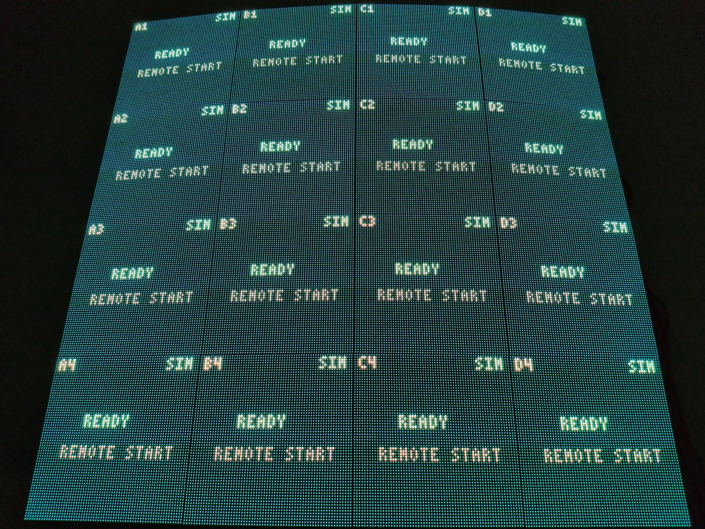
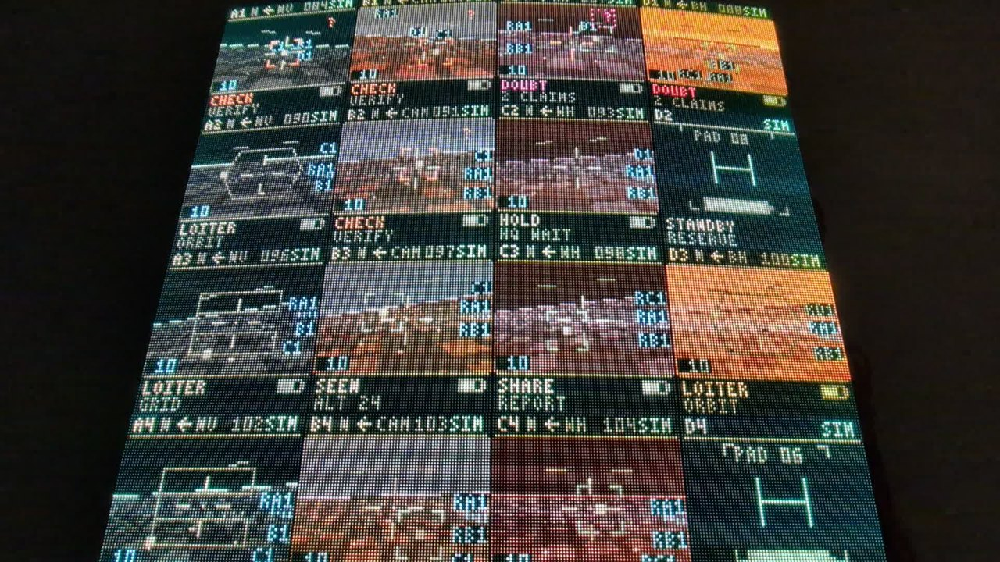
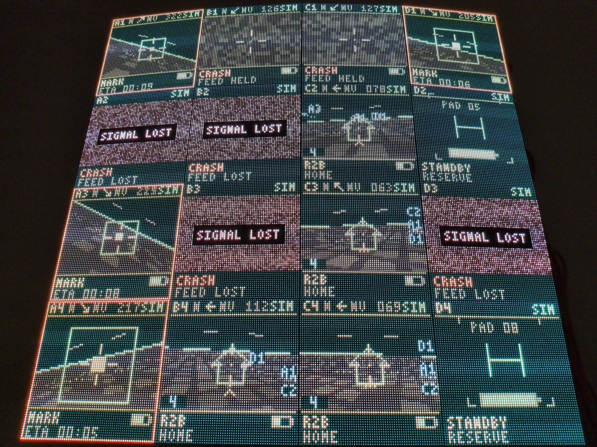
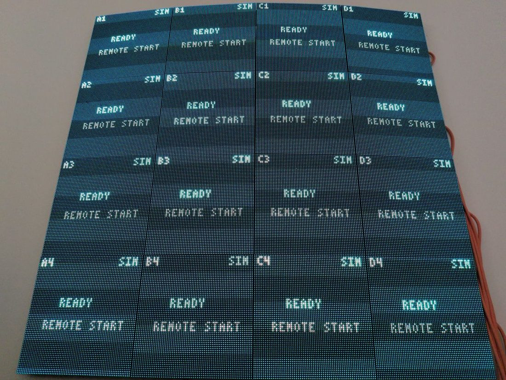
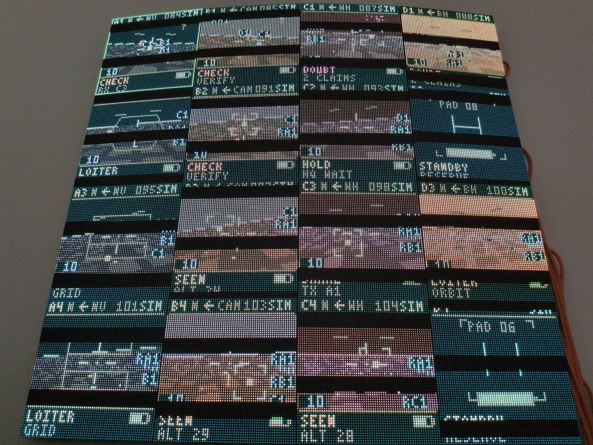
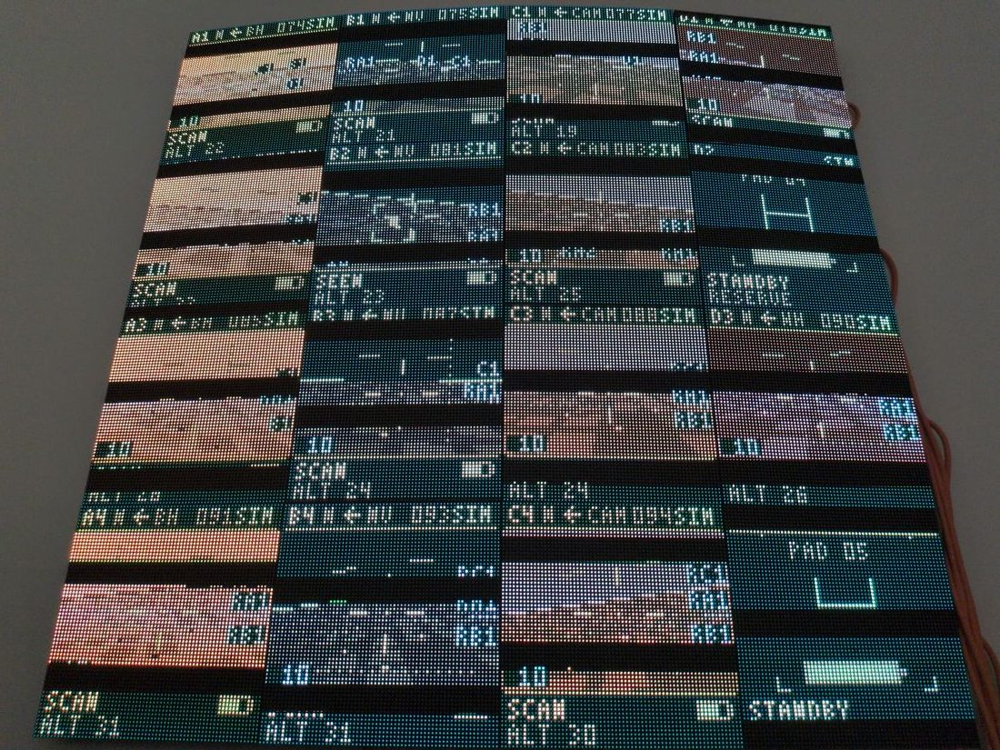

Wall media: the lens, for real
These are real wall-camera captures from live owner-started demo missions, hash-linked frame-by-frame to their mission manifests. Frames were visually screened before publication: legible panels, no people, no device identities. The camera sees the wall from behind/below, so published derivatives are rotated 180 degrees to read correctly.
After the rescue retheme (run 2629375795)
All sixteen panels now run the rescue-retheme firmware (survivor site MARK with rescue ETA countdown, replacing the legacy KILL countdown), deployed by Wi-Fi OTA and verified node by node. This silent 90-second capture (session-2629375795-retheme) is the first wall record of the rethemed fleet: MARK ETA countdowns fleet-wide, zero legacy vocabulary on any panel. It is a live demonstration, not footage of scored runs; the hash-verified dataset bundle carries the manifest. The panels render mission states; this footage does not demonstrate on-node inference or a continuous attack, model review and physical intervention.



Before the retheme (run 2304481875)



Full evidence (manifest, scores, journals) ships in the dataset bundle; code and canonical results are in the source repository.